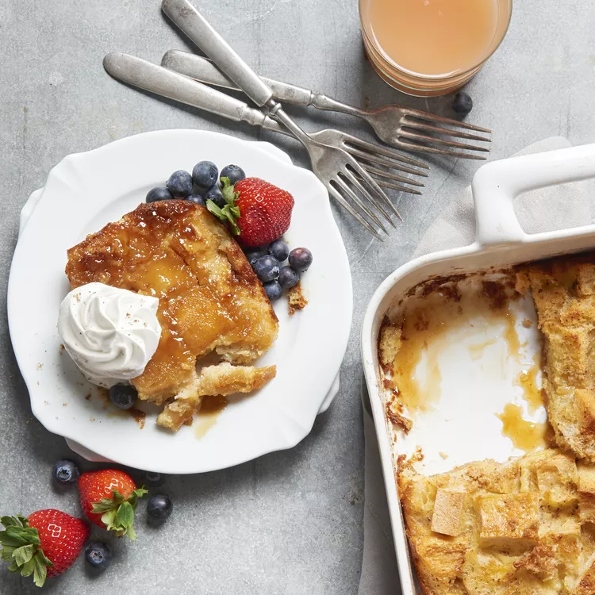

French Toast Casserole

This decadent French toast casserole is the make-ahead breakfast of your dreams. Just assemble it the night before and pop it in the oven in the morning — it's easy, super sweet, and oh-so satisfying.
French Toast Casserole Ingredients
This easy French toast casserole comes together with ingredients you likely already have on hand. Here's what you'll need:
- Brown sugar
- Butter
- Bread
- Eggs
- Milk
- Vanilla
- Cinnamon
How to Make French Toast Casserole
You'll find the full, step-by-step recipe below — but here's a brief overview of what you can expect when you make this top-rated overnight French toast casserole:
- Make the French toast: Cook the butter with a cup of brown sugar until the butter is melted and the sugar is dissolved, then pour the mixture into a prepared baking dish. Scatter the bread pieces over the butter mixture. Mix the milk, vanilla, and eggs together, then pour over the bread.
- Refrigerate: Cover the casserole and transfer to the fridge. Refrigerate at least 8 hours or up to overnight.
- Bake the casserole: Remove the casserole from the fridge and uncover. Sprinkle with a mixture of brown sugar-cinnamon, then bake in the preheated oven until the casserole is browned and bubbling.
Home
Top